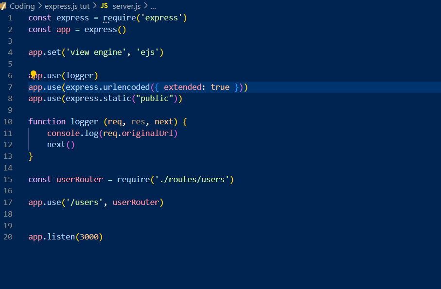

Express.js - 1
Written by Danesh Udachia
22/7/24
Express.JS 1
Summary
This is the second installment of this series in which I learn express.js. After watching about two Youtube Videos, both from Web Dev Simplified, I have been able to gain a shallow grasp on the framework and how it works and how I can use it, I have made a server
, made a route or two, and I have somewhat gained a grasp on how some of it works. This doesn't mean, I'm experienced or comfortable in it, by any means, but still, I have something.
Resources
The resources I have used so far, have only been Web Dev Simplified's Youtube video on Express.js crash course, and his middleware explained video. I have also used a tiny bit of ChatGPT in troubleshooting, but nothing at all major.

Next Steps
Alrighty, after the first installment, I have to say I have my work cut out for me, I have got an abundance of things to learn. I have barely even learnt how to make servers and how to use routes, let alone what is middleware and how to use it.
In the next steps, I hope to finally be able to confidentally make a server, set up some routes and understand and use basic Middleware while also being able to understand and solifidy the things I have already learnt.